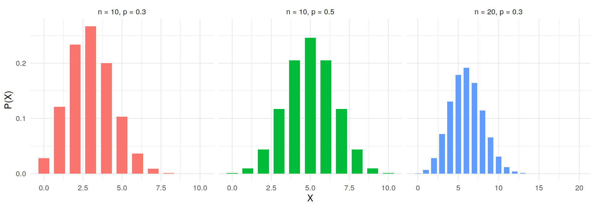

X P
1 1 0.125
2 2 0.125
3 3 0.125
4 4 0.125
5 5 0.125
6 6 0.125
7 7 0.125
8 8 0.125Statistics
Chapter 5: Discrete Probability Distributions
Yu-You Liou
Shih Chien University
2026-10-08
Overview
Chapter 5 explains probability distributions for discrete random variables — how to build them, how to describe them, and the special distributions used most often.
| Section | Topics |
|---|---|
| 5-1 | Random variables; discrete probability distributions; graphs; the two requirements |
| 5-2 | Mean, variance, standard deviation, expectation for a discrete random variable |
| 5-3 | Binomial experiments; binomial probability formula (factorial and combination forms); binomial mean, variance, standard deviation |
| 5-4 | Other distributions: multinomial, Poisson, hypergeometric, geometric |
Chapter Objectives
After completing this chapter, you should be able to
- Construct a probability distribution for a random variable.
- Find the mean, variance, standard deviation, and expected value for a discrete random variable.
- Find the exact probability for X successes in n trials of a binomial experiment.
- Find the mean, variance, and standard deviation for the variable of a binomial distribution.
- Find probabilities for outcomes of variables, using the Poisson, hypergeometric, geometric, and multinomial distributions.
Section 5-1: Probability Distributions
Random Variables
A variable was defined in Chapter 1 as a characteristic or attribute that can assume different values. Because the variables in this chapter are associated with probability, they are called random variables.
Random Variable
A random variable is a variable whose values are determined by chance.
Discrete and Continuous Random Variables
- Discrete variables have a finite number of possible values or an infinite number of values that can be counted — enumerated using the numbers 1, 2, 3, \ldots
- Continuous variables can assume all values in the interval between any two given values; they are obtained from data that are measured rather than counted.
Only discrete random variables are used in this chapter; Chapter 6 explains continuous random variables.
Constructing a Probability Distribution
Toss three coins. The sample space is TTT, TTH, THT, HTT, HHT, HTH, THH, HHH, and if X is the number of heads, then X assumes the value 0, 1, 2 or 3.
| Number of heads X | 0 | 1 | 2 | 3 |
|---|---|---|---|---|
| Probability P(X) | \frac{1}{8} | \frac{3}{8} | \frac{3}{8} | \frac{1}{8} |
Discrete Probability Distribution
A discrete probability distribution consists of the values a random variable can assume and the corresponding probabilities of the values. The probabilities are determined theoretically or by observation.
Procedure Table
Constructing a Probability Distribution
Step 1 Make a frequency distribution for the outcomes of the variable.
Step 2 Find the probability for each outcome by dividing the frequency of the outcome by the sum of the frequencies.
Step 3 If a graph is required, place the outcomes on the x axis and the probabilities on the y axis, and draw vertical bars for each outcome and its corresponding probability.
Discrete probability distributions can be shown by using a graph, a table, or a formula.
Example 5-1
Rolling an Eight-Sided Die
A board game uses an eight-sided die with the numbers 1 through 8 on its faces. Construct a probability distribution for the number that shows when the die is rolled once.
Example 5-1
Solution
Prepare data
The sample space is 1, 2, 3, 4, 5, 6, 7, 8 and each outcome has probability \frac{1}{8} = 0.125, so the distribution is as shown.
Example 5-2
Tossing Four Coins
Represent graphically the probability distribution of the number of heads obtained when four coins are tossed.
Number of heads X 0 1 2 3 4
Probability P(X) 1/16 4/16 6/16 4/16 1/16Back to Example 5-7
Example 5-2
Solution
Prepare data
The values that X assumes are located on the x axis, and the values for P(X) are located on the y axis. The 16 equally likely outcomes give 1, 4, 6, 4, 1 ways of obtaining 0, 1, 2, 3, 4 heads.
Example 5-2
Example 5-3
Late Deliveries per Courier
A food-delivery platform in Kaohsiung tracked its 50 scooter couriers during one evening shift and recorded how many deliveries each courier arrived late for. Construct a probability distribution for the number of late deliveries per courier (hypothetical data).
Late deliveries 1 2 3 4
Frequency 10 20 15 5Back to Example 5-8
Example 5-3
Example 5-3
Two Requirements for a Probability Distribution
Two Requirements for a Probability Distribution
- The sum of the probabilities of all the events in the sample space must equal 1; that is, \Sigma P(X) = 1.
- The probability of each event in the sample space must be between or equal to 0 and 1. That is, 0 \leq P(X) \leq 1.
The sum cannot be less than 1 or greater than 1, since the sample space includes all possible outcomes of the probability experiment. A probability cannot be a negative number or greater than 1.
Example 5-4
Probability Distributions
Determine whether each distribution is a probability distribution.
a. X 2 4 6 8
P(X) 0.3 0.3 0.2 0.4
b. X -$10 $0 $10 $20
P(X) 1/8 1/2 1/4 1/8
c. X 0 1 2 3 4
P(X) 0.2 0.2 0.2 0.2 0.2
d. X 10 20 30 40
P(X) 0.5 0.7 -0.3 0.1Example 5-4
Example 5-4
Solution
Check the remaining two distributions
[1] 1[1] TRUE[1] 1[1] FALSE- a. No. The sum of the probabilities is greater than 1.
- b. Yes. The sum equals 1 and every probability lies between 0 and 1.
- c. Yes. The sum equals 1 and every probability lies between 0 and 1.
- d. No. The sum equals 1, but one of the probabilities is less than 0.
Section 5-2: Mean, Variance, Standard Deviation, and Expectation
The Mean of a Probability Distribution
The sample mean \bar{X} = \frac{\Sigma X}{n} and the population mean \mu = \frac{\Sigma X}{N} cannot be used for a random variable of a probability distribution, because the die would have to be rolled an infinite number of times. A new formula gives the exact theoretical value.
Formula for the Mean of a Probability Distribution
The mean of a random variable with a discrete probability distribution is
\mu = X_1 \cdot P(X_1) + X_2 \cdot P(X_2) + \cdots + X_n \cdot P(X_n) = \Sigma X \cdot P(X)
where X_1, X_2, \ldots, X_n are the outcomes and P(X_1), P(X_2), \ldots, P(X_n) are the corresponding probabilities.
Rounding Rule
Rounding Rule for the Mean, Variance, and Standard Deviation
The mean, variance, and standard deviation of a probability distribution should be rounded to one more decimal place than the outcome X. When fractions are used, they should be reduced to lowest terms.
Example 5-5
Rolling a Four-Sided Die
Find the mean of the number that shows when a four-sided die, with the numbers 1 through 4 on its faces, is rolled.
Back to Example 5-9
Example 5-5
Solution
Solve
\mu = \Sigma X \cdot P(X) = 1 \cdot \tfrac{1}{4} + 2 \cdot \tfrac{1}{4} + 3 \cdot \tfrac{1}{4} + 4 \cdot \tfrac{1}{4} = \frac{10}{4} = 2.5
When the die is rolled many times, the theoretical mean is 2.5, even though the die cannot show 2.5.
Example 5-6
Barcode Scanners
An ageing sorting line in a distribution centre has 3 independent barcode scanners, each with a 50% chance of still being in working order (W) rather than broken (B) at the end of a year. Find the mean number of working scanners on the line.
BBB WBB
BBW WBW
BWB WWB
BWW WWWExample 5-6
Example 5-7
Tossing Four Coins
If four coins are tossed, find the mean of the number of heads that occur. (See the distribution in Example 5-2.)
Example 5-7
Solution
Solve
\mu = \Sigma X \cdot P(X) = 0 \cdot \tfrac{1}{16} + 1 \cdot \tfrac{4}{16} + 2 \cdot \tfrac{6}{16} + 3 \cdot \tfrac{4}{16} + 4 \cdot \tfrac{1}{16} = \frac{32}{16} = 2
The mean of 2 heads is the long-run or theoretical average of many sets of four tosses.
Example 5-8
Late Deliveries per Courier
Find the mean number of late deliveries per courier for the evening shift, using the distribution built in Example 5-3.
Outcome X 1 2 3 4
Probability P(X) 0.20 0.40 0.30 0.10Example 5-8
Variance and Standard Deviation
The mean describes the long-run average, but it says nothing about the spread of the distribution. The definition formula is \sigma^2 = \Sigma[(X - \mu)^2 \cdot P(X)]; the algebraically equivalent shortcut formula below is used in the examples.
Formula for the Variance of a Probability Distribution
\sigma^2 = \Sigma[X^2 \cdot P(X)] - \mu^2
The standard deviation of a probability distribution is
\sigma = \sqrt{\sigma^2} \qquad\text{or}\qquad \sigma = \sqrt{\Sigma[X^2 \cdot P(X)] - \mu^2}
Remember that the variance and standard deviation cannot be negative.
Example 5-9
Rolling a Four-Sided Die
Compute the variance and standard deviation for the probability distribution in Example 5-5.
Example 5-9
Solution
Solve
\sigma^2 = \left(1^2 \cdot \tfrac{1}{4} + 2^2 \cdot \tfrac{1}{4} + 3^2 \cdot \tfrac{1}{4} + 4^2 \cdot \tfrac{1}{4}\right) - (2.5)^2 = 7.5 - 6.25 = 1.25
[1] 1.25[1] 1.118034Hence, the standard deviation for rolling a four-sided die is about 1.118.
Example 5-10
Selecting Numbered Tokens
A bag holds 8 tokens. Three are numbered 2, two are numbered 4, and three are numbered 6. The tokens are mixed and one is drawn at random. Its number is recorded and the token is replaced. If the experiment is repeated many times, find the variance and standard deviation of the numbers on the tokens.
Example 5-10
Example 5-11
Escalated Calls
On a randomly selected day, a customer-service centre in Taichung recorded how many calls each of its 40 agents had to escalate to a supervisor. Twelve agents escalated no calls, 14 escalated one call, 8 escalated two calls, 4 escalated three calls, and 2 escalated four calls. Find the variance and standard deviation of the number of escalated calls per agent (hypothetical data).
Example 5-11
Example 5-11
Expectation
Expected Value
The expected value of a discrete random variable of a probability distribution is the theoretical average of the variable. The formula is
\mu = E(X) = \Sigma X \cdot P(X)
The symbol E(X) is used for the expected value.
The formula for the expected value is the same as the formula for the theoretical mean, so E(X) = \mu. When expected value problems involve money, round the answer to the nearest cent.
Example 5-12
Raffle Tickets
A student association sells 500 raffle tickets at NT$100 each for a tablet valued at NT$12,000. What is the expected value of the gain if you buy one ticket?
Win Lose
Gain X NT$11,900 -NT$100
Probability P(X) 1/500 499/500Example 5-12
Solution
Solve — for a win the net gain is NT$11,900, since the NT$100 ticket price is not returned; for a loss the gain is -NT$100.
E(X) = 11900 \cdot \tfrac{1}{500} + (-100) \cdot \tfrac{499}{500} = -76
A buyer loses, on average, NT$76 on each ticket purchased.
Example 5-13
Prize Coupons
A night-market game booth draws prize coupons from a drum holding 20 coupons: 10 are worth NT$50, 5 are worth NT$100, 3 are worth NT$200, 1 is worth NT$500, and 1 is worth NT$1,000. If one coupon is drawn at random, find the expected value of the coupon.
Example 5-13
Solution
Example 5-14
Choosing a Bond
An investment adviser asks a client to put NT$400,000 into one of two corporate bonds. Bond A pays a return of 5% and has a default rate of 1%. Bond B pays a return of 8% and has a default rate of 4%. Find the expected rate of return and decide which bond is the better investment. When a bond defaults, the investor loses the whole investment (hypothetical data).
Example 5-14
Expectation and Games of Chance
Caution
In gambling games, if the expected value of the game is zero, the game is said to be fair. If the expected value is positive, the game is in favor of the player; if it is negative, the game is in favor of the house — in the long run the players will lose money.
Section 5-3: The Binomial Distribution
Binomial Experiments
Many probability problems have only two outcomes, or can be reduced to two outcomes: a coin lands heads or tails, a team wins or loses, a treatment is effective or ineffective, an answer is correct or incorrect. Each repetition of the experiment is called a trial.
Binomial Experiment
A binomial experiment is a probability experiment that satisfies the following four requirements:
- There must be a fixed number of trials.
- Each trial can have only two outcomes, or outcomes that can be reduced to two outcomes. These outcomes can be considered as either success or failure.
- The outcomes of each trial must be independent of one another.
- The probability of a success must remain the same for each trial.
The word success does not imply that something good or positive has occurred.
Example 5-15
Binomial Experiments
Decide whether each experiment is a binomial experiment. If not, state the reason why.
a. Selecting 30 ETP students and recording their year of study
b. Selecting 30 shoppers at a department store and recording whether each
one paid with a mobile wallet
c. Drawing four cards from a deck without replacement and recording whether
each card is a face card
d. Selecting eight employees from a large trading firm and asking each one
whether they hold a TOEIC certificate
e. Recording the number of items in each of 60 randomly selected online ordersExample 5-15
Solution
Check the four requirements for each experiment
- a. No. There are four possible outcomes: first year, second year, third year, and fourth year.
- b. Yes. All four requirements are met.
- c. No. Since the cards are not replaced, the events are not independent.
- d. Yes. All four requirements are met.
- e. No. An order can contain any number of items, so there are more than two outcomes.
The Binomial Distribution
Binomial Distribution
The outcomes of a binomial experiment and the corresponding probabilities of these outcomes are called a binomial distribution.
Notation for the Binomial Distribution
| Symbol | Meaning |
|---|---|
| P(S) | The symbol for the probability of success |
| P(F) | The symbol for the probability of failure |
| p | The numerical probability of a success |
| q | The numerical probability of a failure |
| n | The number of trials |
| X | The number of successes in n trials |
P(S) = p and P(F) = 1 - p = q. Note that 0 \leq X \leq n and X = 0, 1, 2, 3, \ldots, n.
Binomial Probability Formula
Binomial Probability Formula
In a binomial experiment, the probability of exactly X successes in n trials is
P(X) = \frac{n!}{(n - X)!\,X!} \cdot p^X \cdot q^{n-X} \qquad\text{or}\qquad P(X) = {}_{n}C_{X} \cdot p^X \cdot q^{n-X}
The two forms are the same formula: the number of ways to get X successes from n trials without regard to order is the combination
_{n}C_{X} = \frac{n!}{(n-X)!\,X!}
Each success has probability p and can occur X times; each failure has probability q and can occur n - X times.
Example 5-16
Tossing Four Coins
A coin is tossed 4 times. Find the probability of getting exactly three heads.
HHHH HHHT HHTH HTHH THHH HHTT HTHT HTTH
THHT THTH TTHH HTTT THTT TTHT TTTH TTTTBack to Example 5-19
Example 5-16
Example 5-16
Solution
Solve using the binomial formula — here n = 4, X = 3, p = \frac{1}{2}, q = \frac{1}{2}.
P(3\text{ heads}) = {}_{4}C_{3} \left(\tfrac{1}{2}\right)^3 \left(\tfrac{1}{2}\right)^1 = \frac{4!}{(4-3)!\,3!} \left(\tfrac{1}{2}\right)^3 \left(\tfrac{1}{2}\right)^1 = 0.25
Sampling Without Replacement
Caution
When sampling is done without replacement, such as in surveys, the events are dependent. However, the events can be considered independent if the size of the sample is no more than 5% of the size of the population, that is, n \leq 0.05N.
Example 5-17
Mobile Wallet Payments
A payments study of a Taiwanese online marketplace found that 3 out of 10 orders are paid with a mobile wallet. If 12 orders are selected at random, find the probability that exactly three of them were paid with a mobile wallet (hypothetical data).
Example 5-17
Solution
Solve with the factorial form — here n = 12, X = 3, p = \frac{3}{10}, q = \frac{7}{10}.
P(3) = \frac{12!}{(12-3)!\,3!}\left(\tfrac{3}{10}\right)^3\left(\tfrac{7}{10}\right)^9 = 220(0.027)(0.040353607) \approx 0.2397
Example 5-17
Solution
Alternate solution — using the combination formula
P(3) = {}_{12}C_{3}\left(\tfrac{3}{10}\right)^3\left(\tfrac{7}{10}\right)^9 \approx 0.2397
There is about a 0.2397 probability that exactly 3 of 12 randomly selected orders were paid with a mobile wallet.
Example 5-18
Use of Freight Forwarders
A trade study of Taiwanese small and medium-sized exporters found that 40% of them hand their shipments to a freight forwarder rather than booking space themselves. If 6 exporters are selected at random, find the probability that at least 4 of them use a freight forwarder (hypothetical data).
Example 5-18
Solution
Solve with the factorial form — find P(4), P(5) and P(6), then add.
P(4) = \frac{6!}{(6-4)!\,4!}(0.4)^4(0.6)^2 \approx 0.138 \qquad P(5) = \frac{6!}{(6-5)!\,5!}(0.4)^5(0.6)^1 \approx 0.037
P(6) = \frac{6!}{(6-6)!\,6!}(0.4)^6(0.6)^0 \approx 0.004
Example 5-18
Solution
Alternate solution — using the combination formula
P(4) = {}_{6}C_{4}(0.4)^4(0.6)^2 \qquad P(5) = {}_{6}C_{5}(0.4)^5(0.6)^1 \qquad P(6) = {}_{6}C_{6}(0.4)^6(0.6)^0
P(\text{at least four exporters use a freight forwarder}) = 0.138 + 0.037 + 0.004 = 0.179
Using the Binomial Table
Computing probabilities with the binomial formula can be tedious, so Table A-2 in Appendix A gives the probabilities for individual events for selected values of n and p. In R the same values come from dbinom(X, n, p) and cumulative probabilities from pbinom(X, n, p).
Example 5-19
Tossing Four Coins
Solve the problem in Example 5-16 by using Table A-2.
Example 5-19
Example 5-20
Repairs on Returned Handsets
A repair centre in Hsinchu finds that 10% of the handsets returned under warranty need a new mainboard. If a random sample of 15 returned handsets is selected, find these probabilities by using the binomial table in Appendix A (hypothetical data).
a. Exactly 4 of the handsets in the sample need a new mainboard.
b. At most 3 of the handsets in the sample need a new mainboard.
c. At least 3 of the handsets in the sample need a new mainboard.Example 5-20
Example 5-21
Honoured Hotel Bookings
A boutique hotel in Taipei finds that 80% of its confirmed bookings are honoured; the rest are no-shows. If a random sample of 25 confirmed bookings is selected, find the probability that between 18 and 22, inclusive, of them are honoured (hypothetical data).
Example 5-21
Binomial Distributions in R
Changing n and p changes the centre and the shape of a binomial distribution. Prepare data
Binomial Distributions in R
Output figure

Mean, Variance, and Standard Deviation for the Binomial Distribution
Binomial Mean, Variance, and Standard Deviation
\mu = n \cdot p \qquad \sigma^2 = n \cdot p \cdot q \qquad \sigma = \sqrt{n \cdot p \cdot q}
These shorter formulas are mathematically equivalent to the general formulas \mu = \Sigma X \cdot P(X) and \sigma^2 = \Sigma[X^2 \cdot P(X)] - \mu^2 of Section 5-2.
Example 5-22
Tossing a Coin
A coin is tossed 16 times. Find the mean, variance, and standard deviation of the number of heads that will be obtained.
Example 5-22
Example 5-22
Solution
Example 5-23
Rolling a Die
A 10-sided die (with the numbers 1 through 10 on its faces) is rolled 500 times. Find the mean, variance, and standard deviation of the number of 7s that will be rolled.
Example 5-23
Solution
Solve — this is a binomial experiment with n = 500, p = \frac{1}{10}, and q = \frac{9}{10}.
\mu = 500 \cdot \tfrac{1}{10} = 50 \qquad \sigma^2 = 500 \cdot \tfrac{1}{10} \cdot \tfrac{9}{10} = 45 \qquad \sigma = \sqrt{45} \approx 6.708
Example 5-24
Cross-Border Online Shopping
A consumer study reports that 75% of Taiwanese online shoppers have placed at least one order on a cross-border e-commerce site. If 1,200 shoppers are selected at random, find the mean, variance, and standard deviation of the number who have shopped across borders (hypothetical data).
Example 5-24
Section 5-4: Other Types of Distributions
Four More Discrete Distributions
In addition to the binomial distribution, four of the most commonly used distributions are the multinomial, the Poisson, the hypergeometric and the geometric distribution.
| Distribution | When to use it |
|---|---|
| Multinomial | More than two outcomes per trial |
| Poisson | n large, p small; occurrences over time, area or volume |
| Hypergeometric | Two outcomes, sampling without replacement |
| Geometric | Two outcomes, repeated until the first success |
The Multinomial Distribution
If each trial in an experiment has more than two outcomes — “approve”, “disapprove”, “no opinion” — the binomial distribution cannot be used.
Multinomial Experiment
A multinomial experiment is a probability experiment that satisfies the following four requirements:
- There must be a fixed number of trials.
- Each trial has a specific — but not necessarily the same — number of outcomes.
- The trials are independent.
- The probability of a particular outcome remains the same.
Formula for the Multinomial Distribution
Formula for the Multinomial Distribution
If X consists of events E_1, E_2, \ldots, E_k with corresponding probabilities p_1, p_2, \ldots, p_k, and X_i is the number of times E_i occurs, then
P(X) = \frac{n!}{X_1! \cdot X_2! \cdot X_3! \cdots X_k!} \cdot p_1^{X_1} \cdot p_2^{X_2} \cdots p_k^{X_k}
where X_1 + X_2 + \cdots + X_k = n and p_1 + p_2 + \cdots + p_k = 1.
The multinomial distribution is a general distribution, and the binomial distribution is a special case of it with k = 2.
Example 5-25
Monthly Orders on an E-Commerce Platform
An e-commerce platform finds that the probabilities an active customer places 1, 2, 3, or 4 orders in a month are 0.45, 0.30, 0.20, and 0.05. If 10 active customers are selected, find the probability that 4 place one order, 3 place two orders, 2 place three orders, and 1 places four orders (hypothetical data).
Example 5-25
Solution
Solve — n = 10; X_1 = 4, X_2 = 3, X_3 = 2, X_4 = 1; p_1 = 0.45, p_2 = 0.30, p_3 = 0.20, p_4 = 0.05.
P(X) = \frac{10!}{4!\,3!\,2!\,1!}(0.45)^4(0.30)^3(0.20)^2(0.05)^1 \approx 0.0279
[1] 12600[1] 0.02790065[1] 0.02790065There is about a 0.0279 probability that the ten customers split in exactly this way.
Example 5-26
Bubble-Tea Orders
A bubble-tea chain finds that the probabilities a customer entering a store buys 0, 1, 2, or 3 drinks are 0.20, 0.50, 0.20, and 0.10, respectively. If 9 customers enter the store, find the probability that 2 buy nothing, 4 buy 1 drink, 2 buy 2 drinks, and 1 buys 3 drinks (hypothetical data).
Example 5-26
Solution
Solve — n = 9; X_1 = 2, X_2 = 4, X_3 = 2, X_4 = 1; p_1 = 0.20, p_2 = 0.50, p_3 = 0.20, p_4 = 0.10.
P(X) = \frac{9!}{2!\,4!\,2!\,1!}(0.20)^2(0.50)^4(0.20)^2(0.10)^1 = 0.0378
[1] 3780[1] 0.0378There is a 0.0378 probability that the results will occur as described.
Example 5-27
Selecting Colored Marbles
A box contains 5 red marbles, 3 white marbles, and 2 black marbles. A marble is selected at random, its color is written down, and it is replaced each time. Find the probability that if 6 marbles are selected, 3 are red, 2 are white, and 1 is black.
Example 5-27
Solution
Solve — n = 6; X_1 = 3, X_2 = 2, X_3 = 1; p_1 = \frac{5}{10}, p_2 = \frac{3}{10}, p_3 = \frac{2}{10}.
P(X) = \frac{6!}{3!\,2!\,1!}\left(\tfrac{5}{10}\right)^3\left(\tfrac{3}{10}\right)^2\left(\tfrac{2}{10}\right)^1 = 60(0.00225) = 0.135
The Poisson Distribution
Poisson Experiment
A Poisson experiment is a probability experiment that satisfies the following requirements:
- The random variable X is the number of occurrences of an event over some interval (length, area, volume, period of time, etc.).
- The occurrences occur randomly.
- The occurrences are independent of one another.
- The average number of occurrences over an interval is known.
The Poisson distribution is useful when n is large and p is small and the independent variables occur over a period of time, or when a density of items is distributed over a given area or volume.
Formula for the Poisson Distribution
Formula for the Poisson Distribution
The probability of X occurrences in an interval of time, volume, area, etc., for a variable where \lambda is the mean number of occurrences per unit is
P(X;\, \lambda) = \frac{e^{-\lambda}\lambda^X}{X!} \qquad\text{where } X = 0, 1, 2, \ldots
The letter e is a constant approximately equal to 2.7183. Round the answers to four decimal places.
Table A-3 in Appendix A gives P for various values of \lambda and X; in R the same values come from dpois(X, lambda).
Example 5-28
Fabric Flaws
A textile mill in Changhua finds 120 flaws randomly distributed along a 400-metre roll of fabric. Find the probability that a given metre of the roll contains exactly 2 flaws (hypothetical data).
Example 5-28
Solution
Solve — first find the mean number of flaws per metre, \lambda = \frac{120}{400} = 0.3; then substitute X = 2.
P(X;\, \lambda) = \frac{(2.7183)^{-0.3}(0.3)^2}{2!} \approx 0.0333
About 3.3% of the metres along the roll contain exactly 2 flaws.
Example 5-29
Urgent Restock Requests
A logistics warehouse in Kaohsiung receives, on average, 2 urgent restock requests per hour. For any given hour, find the probability that it will receive the following (hypothetical data).
a. At most 3 requests b. At least 3 requests c. 5 or more requestsExample 5-29
Solution
Solve — with \lambda = 2, “at most 3” means 0, 1, 2 or 3 requests; the other two parts are easier to obtain from the complement.
[1] 0.13533528 0.27067057 0.27067057 0.18044704 0.09022352[1] 0.8571235[1] 0.5939942[1] 0.05265302P(X \leq 3) = 0.8571, P(X \geq 3) = 0.5940 and P(X \geq 5) = 0.0527; the part a event is most likely to occur, and the part c event is least likely to occur.
Poisson Approximation to the Binomial
When the Poisson Approximates the Binomial
The Poisson distribution can also be used to approximate the binomial distribution when the expected value \lambda = n \cdot p is less than 5. (The same is true when n \cdot q < 5.)
Example 5-30
Container Inspections
Customs selects approximately 1.5% of the containers arriving at Taichung port for a physical inspection. If a vessel discharges 300 containers, find the probability that exactly 6 of them are inspected (hypothetical data).
Example 5-30
Solution
Solve — since \lambda = n \cdot p = (300)(0.015) = 4.5,
P(X;\, \lambda) = \frac{(2.7183)^{-4.5}(4.5)^6}{6!} \approx 0.1281
The exact binomial value {}_{300}C_{6}(0.015)^6(0.985)^{294} \approx 0.1289; the small difference reflects that the Poisson distribution is an approximation.
The Hypergeometric Distribution
When sampling is done without replacement, the binomial distribution does not give exact probabilities, since the trials are not independent. Suppose a committee of 4 people is to be selected from 7 women and 5 men: the number of ways to get 3 women and 1 man is {}_{7}C_{3} \cdot {}_{5}C_{1} = 35 \cdot 5 = 175, and {}_{12}C_{4} = 495, so P(X) = \frac{175}{495} = \frac{35}{99}.
Hypergeometric Experiment
A hypergeometric experiment is a probability experiment that satisfies the following requirements:
- There are a fixed number of trials.
- There are two outcomes, and they can be classified as success or failure.
- The sample is selected without replacement.
Formula for the Hypergeometric Distribution
Formula for the Hypergeometric Distribution
Given a population with only two types of objects such that there are a items of one kind and b items of another kind and a + b equals the total population, the probability P(X) of selecting without replacement a sample of size n with X items of type a and n - X items of type b is
P(X) = \frac{{}_{a}C_{X} \cdot {}_{b}C_{n-X}}{{}_{a+b}C_{n}}
Example 5-31
Internship Applicants
Twelve students apply for a summer internship at an international trading company. Seven of them have studied abroad and five have not. If the manager selects 4 applicants at random, find the probability that all 4 have studied abroad.
Example 5-31
Solution
Solve — a = 7 applicants who studied abroad, b = 5 who did not, n = 4, X = 4, and n - X = 0.
P(X) = \frac{{}_{7}C_{4} \cdot {}_{5}C_{0}}{{}_{12}C_{4}} = \frac{35}{495} = \frac{7}{99} \approx 0.071
Example 5-32
Sensors Out of Calibration
A quality engineer knows that 4 of the 12 sensors in an incoming shipment are out of calibration. If 5 sensors are selected at random for testing, find the probability that exactly 2 of them are out of calibration.
Example 5-32
Example 5-33
Defective Power Banks
A batch of 20 power banks is checked before shipment. Four of them are tested; if 1 or more of the 4 is defective, the whole batch is rejected. Find the probability that the batch will be rejected if there are actually 5 defective power banks in the batch.
Example 5-33
Solution
Solve — find the probability that none of the 4 tested is defective and subtract it from 1. Here a = 5, b = 15, n = 4, and X = 0.
P(0) = \frac{{}_{5}C_{0} \cdot {}_{15}C_{4}}{{}_{20}C_{4}} = \frac{1365}{4845} \approx 0.282
There is a 0.718, or 71.8%, probability that the batch will be rejected when 5 of the 20 power banks are defective.
The Geometric Distribution
The geometric distribution is used when an experiment that has two outcomes is repeated until a successful outcome is obtained — flipping a coin until a head appears, or rolling a die until a 6 appears. The geometric probability distribution tells us when the success is likely to occur.
Geometric Experiment
A geometric experiment is a probability experiment if it satisfies the following requirements:
- Each trial has two outcomes that can be either success or failure.
- The outcomes are independent of each other.
- The probability of a success is the same for each trial.
- The experiment continues until a success is obtained.
Formula for the Geometric Distribution
Formula for the Geometric Distribution
If p is the probability of a success on each trial and n is the number of the trial at which the first success occurs, then the probability of getting the first success on the nth trial is
P(n) = p(1 - p)^{n-1} \qquad\text{where } n = 1, 2, 3, \ldots
Example 5-34
Rolling a Die
A die is rolled repeatedly. Find the probability that the first 1 appears on the third roll.
Example 5-34
Solution
Solve — to get the first 1 on the third roll, the first two rolls must show something other than a 1:
P(\text{not }1,\ \text{not }1,\ 1) = \tfrac{5}{6} \cdot \tfrac{5}{6} \cdot \tfrac{1}{6} = \frac{25}{216} \approx 0.116
P(n) = p(1-p)^{n-1} = \tfrac{1}{6}\left(1 - \tfrac{1}{6}\right)^{3-1} = \tfrac{1}{6}\left(\tfrac{5}{6}\right)^2 = \frac{25}{216}
Example 5-35
Booking Through an Online Travel Agency
About 35% of Taiwanese outbound travellers book their trip through an online travel agency. If travellers are contacted one at a time, find the probability that the fifth traveller contacted is the first one who booked through an online travel agency (hypothetical data).
Example 5-35
Solution
Table 5-1: Summary of Discrete Distributions
| Distribution | Used when |
|---|---|
| Binomial | Two outcomes, fixed number of independent trials, constant p |
| Multinomial | More than two outcomes, constant probabilities, independent, fixed n |
| Poisson | n large and p small; occurrences over time, area or volume |
| Hypergeometric | Two outcomes and sampling is done without replacement |
| Geometric | Two outcomes; the first success occurs on the nth trial |
Table 5-1: Summary of Discrete Distributions (cont.)
Probability formulas — binomial and multinomial:
P(X) = {}_{n}C_{X}\,p^X q^{n-X} \qquad P(X) = \frac{n!}{X_1!\cdots X_k!}p_1^{X_1}\cdots p_k^{X_k}
Poisson and hypergeometric:
P(X;\lambda) = \frac{e^{-\lambda}\lambda^X}{X!} \qquad P(X) = \frac{{}_{a}C_{X} \cdot {}_{b}C_{n-X}}{{}_{a+b}C_{n}}
Geometric:
P(n) = p(1-p)^{n-1}
Important Terms
Chapter 5 Vocabulary
binomial distribution · binomial experiment · discrete probability distribution · expected value · geometric distribution · geometric experiment · hypergeometric distribution · hypergeometric experiment · multinomial distribution · multinomial experiment · Poisson distribution · Poisson experiment · random variable
Key Formulas
Probability Distributions
Mean of a probability distribution: \mu = \Sigma X \cdot P(X)
Variance and standard deviation of a probability distribution: \sigma^2 = \Sigma[X^2 \cdot P(X)] - \mu^2 \qquad \sigma = \sqrt{\Sigma[X^2 \cdot P(X)] - \mu^2}
Expected value: E(X) = \Sigma X \cdot P(X)
Key Formulas
The Binomial Distribution
P(X) = \frac{n!}{(n-X)!\,X!} \cdot p^X \cdot q^{n-X} \qquad\text{or}\qquad P(X) = {}_{n}C_{X} \cdot p^X \cdot q^{n-X}
\mu = n \cdot p \qquad \sigma^2 = n \cdot p \cdot q \qquad \sigma = \sqrt{n \cdot p \cdot q}
Key Formulas
Other Distributions
P(X) = \frac{n!}{X_1! \cdot X_2! \cdots X_k!} \cdot p_1^{X_1} \cdot p_2^{X_2} \cdots p_k^{X_k} \qquad P(X;\, \lambda) = \frac{e^{-\lambda}\lambda^X}{X!}
P(X) = \frac{{}_{a}C_{X} \cdot {}_{b}C_{n-X}}{{}_{a+b}C_{n}} \qquad P(n) = p(1-p)^{n-1}
Key Takeaways
Key point
- A discrete probability distribution consists of the values a random variable can assume and the corresponding probabilities; it requires \Sigma P(X) = 1 and 0 \leq P(X) \leq 1
- Mean, variance and standard deviation of a probability distribution: \mu = \Sigma X \cdot P(X), \sigma^2 = \Sigma[X^2 \cdot P(X)] - \mu^2, \sigma = \sqrt{\sigma^2}
- The expected value E(X) = \mu is the theoretical average; a game is fair when E(X) = 0
- A binomial experiment has a fixed number of trials, two outcomes, independent trials and a constant p
- The binomial probability can be computed either with the factorial form \frac{n!}{(n-X)!X!}p^Xq^{n-X} or with the combination formula {}_{n}C_{X}\,p^Xq^{n-X} — the two are identical
- For a binomial variable, \mu = np, \sigma^2 = npq and \sigma = \sqrt{npq}
- The multinomial distribution generalises the binomial to more than two outcomes per trial
- The Poisson distribution counts occurrences over an interval and approximates the binomial when \lambda = np < 5
- The hypergeometric distribution applies when sampling is done without replacement
- The geometric distribution gives the probability that the first success occurs on the nth trial: P(n) = p(1-p)^{n-1}
Acknowledgement
Copyright notice. These teaching materials follow the organization and terminology of Bluman, A. G. (2023). Elementary statistics: A step by step approach (11th ed.). McGraw Hill. All rights in the original work are reserved by its authors and publishers.
Original examples. Every worked example, data set, and R script in these slides was written for this course. The data are hypothetical unless stated otherwise.
Non-commercial use only. These materials are strictly intended for educational purposes and must not be used for commercial gain or profit.
Proper attribution. Any reproduction, distribution, or use of these materials must provide proper attribution to the original source.

Elementary Statistics: A Step by Step Approach